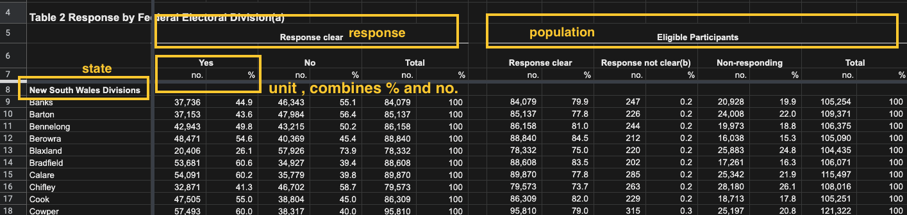

library(tidyverse)
library(readxl)
library(tidyxl)
# install.packages('unpivotr')
library(unpivotr)Messy Excel spreadsheets
Finding LGBTQ datasets in the world, I often find .xlsx files, these are often very messy or formatted in a way that is less than ideal. This blog will show how to convert the Excel spreadsheet into a tidyverse dataset.
Book Tutorial
We will first use a eBook tutorial Spreadsheet Munging Strategies but I will provide details on each step of the process. The data tables for this tutorial are Australian Bureau of Statistics, download the data here.
The data tables look like this 
 Notice on the left side the rows have nested State Divisions with regions, and the columns are response and participants.
Notice on the left side the rows have nested State Divisions with regions, and the columns are response and participants.
Libraries
Data tables
cells = xlsx_cells("ozmarriage.xlsx")
cells# A tibble: 4,699 × 21
sheet address row col is_blank data_type error logical numeric
<chr> <chr> <int> <int> <lgl> <chr> <chr> <lgl> <dbl>
1 Contents A1 1 1 FALSE character <NA> NA NA
2 Contents B1 1 2 TRUE blank <NA> NA NA
3 Contents C1 1 3 TRUE blank <NA> NA NA
4 Contents D1 1 4 TRUE blank <NA> NA NA
5 Contents E1 1 5 TRUE blank <NA> NA NA
6 Contents F1 1 6 TRUE blank <NA> NA NA
7 Contents G1 1 7 TRUE blank <NA> NA NA
8 Contents H1 1 8 TRUE blank <NA> NA NA
9 Contents I1 1 9 TRUE blank <NA> NA NA
10 Contents J1 1 10 TRUE blank <NA> NA NA
# … with 4,689 more rows, and 12 more variables: date <dttm>, character <chr>,
# character_formatted <list>, formula <chr>, is_array <lgl>,
# formula_ref <chr>, formula_group <int>, comment <chr>, height <dbl>,
# width <dbl>, style_format <chr>, local_format_id <int># allows for getting table formatting
formats = xlsx_formats("ozmarriage.xlsx")The whole Excel data is 4699 rows and 21 variables, all table (sheets) combined. We want to just get table 1.
# Table 1
cells %>%
filter(sheet == "Table 1", row >= 5L, !is_blank)# A tibble: 162 × 21
sheet address row col is_blank data_type error logical numeric
<chr> <chr> <int> <int> <lgl> <chr> <chr> <lgl> <dbl>
1 Table 1 B5 5 2 FALSE character <NA> NA NA
2 Table 1 I5 5 9 FALSE character <NA> NA NA
3 Table 1 B6 6 2 FALSE character <NA> NA NA
4 Table 1 D6 6 4 FALSE character <NA> NA NA
5 Table 1 F6 6 6 FALSE character <NA> NA NA
6 Table 1 I6 6 9 FALSE character <NA> NA NA
7 Table 1 K6 6 11 FALSE character <NA> NA NA
8 Table 1 M6 6 13 FALSE character <NA> NA NA
9 Table 1 O6 6 15 FALSE character <NA> NA NA
10 Table 1 B7 7 2 FALSE character <NA> NA NA
# … with 152 more rows, and 12 more variables: date <dttm>, character <chr>,
# character_formatted <list>, formula <chr>, is_array <lgl>,
# formula_ref <chr>, formula_group <int>, comment <chr>, height <dbl>,
# width <dbl>, style_format <chr>, local_format_id <int>So far this looks like nothing like the picture, so we will need pull out the column headers by using the unpivotr::behead() function to chop away all that formatting. The image below will help make sense of what is being beheaded.

The image shows Table 2 as it is similar to table 1, except for the nested regions under state. The column names we will use are basic generalized variables of what the columns store, name the column response instead of “response clear” and population instead of “eligible participants”. The regions under state will be moved.
Step 2
Using the image above as a guide in what we are chopping is the response and population columns, the direction of where they are located is important to have. These beheaded columns are at the end of the data table, but will be moved soon.
cells %>%
filter(sheet == "Table 1", row >= 5L, !is_blank) %>%
behead("up-left",'population') %>%
behead('up-left','response')# A tibble: 153 × 23
sheet address row col is_blank data_type error logical numeric
<chr> <chr> <int> <int> <lgl> <chr> <chr> <lgl> <dbl>
1 Table 1 B7 7 2 FALSE character <NA> NA NA
2 Table 1 C7 7 3 FALSE character <NA> NA NA
3 Table 1 B8 8 2 FALSE numeric <NA> NA 2374362
4 Table 1 C8 8 3 FALSE numeric <NA> NA 57.8
5 Table 1 B9 9 2 FALSE numeric <NA> NA 2145629
6 Table 1 C9 9 3 FALSE numeric <NA> NA 64.9
7 Table 1 B10 10 2 FALSE numeric <NA> NA 1487060
8 Table 1 C10 10 3 FALSE numeric <NA> NA 60.7
9 Table 1 B11 11 2 FALSE numeric <NA> NA 592528
10 Table 1 C11 11 3 FALSE numeric <NA> NA 62.5
# … with 143 more rows, and 14 more variables: date <dttm>, character <chr>,
# character_formatted <list>, formula <chr>, is_array <lgl>,
# formula_ref <chr>, formula_group <int>, comment <chr>, height <dbl>,
# width <dbl>, style_format <chr>, local_format_id <int>, population <chr>,
# response <chr>Step 3
This step we are grabbing the no. and % columns underneath the response and population columns. The unit column will be nested and is placed at the end of the data table.
cells %>%
filter(sheet == "Table 1", row >= 5L, !is_blank) %>%
behead("up-left",'population') %>%
behead('up-left','response') %>%
behead('up','unit')# A tibble: 139 × 24
sheet address row col is_blank data_type error logical numeric
<chr> <chr> <int> <int> <lgl> <chr> <chr> <lgl> <dbl>
1 Table 1 B8 8 2 FALSE numeric <NA> NA 2374362
2 Table 1 C8 8 3 FALSE numeric <NA> NA 57.8
3 Table 1 B9 9 2 FALSE numeric <NA> NA 2145629
4 Table 1 C9 9 3 FALSE numeric <NA> NA 64.9
5 Table 1 B10 10 2 FALSE numeric <NA> NA 1487060
6 Table 1 C10 10 3 FALSE numeric <NA> NA 60.7
7 Table 1 B11 11 2 FALSE numeric <NA> NA 592528
8 Table 1 C11 11 3 FALSE numeric <NA> NA 62.5
9 Table 1 B12 12 2 FALSE numeric <NA> NA 801575
10 Table 1 C12 12 3 FALSE numeric <NA> NA 63.7
# … with 129 more rows, and 15 more variables: date <dttm>, character <chr>,
# character_formatted <list>, formula <chr>, is_array <lgl>,
# formula_ref <chr>, formula_group <int>, comment <chr>, height <dbl>,
# width <dbl>, style_format <chr>, local_format_id <int>, population <chr>,
# response <chr>, unit <chr>Step 4
This step is grabbing the states located on the left side. The left location is left of the formatted columns, there will often be 2 left columns next to each other, yet the locations for behead() are left. The state is placed at the end of the data table.
cells %>%
filter(sheet == "Table 1", row >= 5L, !is_blank) %>%
behead("up-left",'population') %>%
behead('up-left','response') %>%
behead('up','unit') %>%
behead('left','state') %>%
arrange(row, col)# A tibble: 126 × 25
sheet address row col is_blank data_type error logical numeric
<chr> <chr> <int> <int> <lgl> <chr> <chr> <lgl> <dbl>
1 Table 1 B8 8 2 FALSE numeric <NA> NA 2374362
2 Table 1 C8 8 3 FALSE numeric <NA> NA 57.8
3 Table 1 D8 8 4 FALSE numeric <NA> NA 1736838
4 Table 1 E8 8 5 FALSE numeric <NA> NA 42.2
5 Table 1 F8 8 6 FALSE numeric <NA> NA 4111200
6 Table 1 G8 8 7 FALSE numeric <NA> NA 100
7 Table 1 I8 8 9 FALSE numeric <NA> NA 4111200
8 Table 1 J8 8 10 FALSE numeric <NA> NA 79.2
9 Table 1 K8 8 11 FALSE numeric <NA> NA 11036
10 Table 1 L8 8 12 FALSE numeric <NA> NA 0.2
# … with 116 more rows, and 16 more variables: date <dttm>, character <chr>,
# character_formatted <list>, formula <chr>, is_array <lgl>,
# formula_ref <chr>, formula_group <int>, comment <chr>, height <dbl>,
# width <dbl>, style_format <chr>, local_format_id <int>, population <chr>,
# response <chr>, unit <chr>, state <chr>Step 5
In this step we arrange the data table by row and column, selecting the columns we want from the Excel data table. The columns row, data_type and numeric are required here, before the selection of the columns. You will see that unit remains nested.
cells %>%
filter(sheet == "Table 1", row >= 5L, !is_blank) %>%
behead("up-left",'population') %>%
behead('up-left','response') %>%
behead('up','unit') %>%
behead('left','state') %>%
arrange(row, col) %>%
select( row, data_type, numeric, # required columns
state, population, response, unit
)# A tibble: 126 × 7
row data_type numeric state population response unit
<int> <chr> <dbl> <chr> <chr> <chr> <chr>
1 8 numeric 2374362 New South Wales Response clear Yes no.
2 8 numeric 57.8 New South Wales Response clear Yes %
3 8 numeric 1736838 New South Wales Response clear No no.
4 8 numeric 42.2 New South Wales Response clear No %
5 8 numeric 4111200 New South Wales Response clear Total no.
6 8 numeric 100 New South Wales Response clear Total %
7 8 numeric 4111200 New South Wales Eligible Participan… Respons… no.
8 8 numeric 79.2 New South Wales Eligible Participan… Respons… %
9 8 numeric 11036 New South Wales Eligible Participan… Respons… no.
10 8 numeric 0.2 New South Wales Eligible Participan… Respons… %
# … with 116 more rows# the rows of states are now a column !!!Step 6
In step 5 we grabbed the columns we wanted, along with the ones we rather not have like the row and data_type. The column numeric held the numeric data we care about. To unnest the unit column that has % and no., we use spatter() function, which will move them into separated columns.
This step we want the units separated and to have state as first column. We have a tidy data table, which could be saved as a .csv file. We selected our columns in the order we want, spatter() the nested column into separate column, and to drop the row column.
cells %>%
filter(sheet == "Table 1", row >= 5L, !is_blank) %>%
behead("up-left",'population') %>%
behead('up-left','response') %>%
behead('up','unit') %>%
behead('left','state') %>%
arrange(row, col) %>%
select( row, data_type, numeric, state, population, response, unit) %>%
spatter(unit) %>% # breaks up the % no. into columns
select(-row)# A tibble: 63 × 5
state population response `%` no.
<chr> <chr> <chr> <dbl> <dbl>
1 New South Wales Eligible Participants "Non-responding" 20.5 1065445
2 New South Wales Eligible Participants "Response clear" 79.2 4111200
3 New South Wales Eligible Participants "Response not clear(a)" 0.2 11036
4 New South Wales Eligible Participants "Total " 100 5187681
5 New South Wales Response clear "No" 42.2 1736838
6 New South Wales Response clear "Total" 100 4111200
7 New South Wales Response clear "Yes" 57.8 2374362
8 Victoria Eligible Participants "Non-responding" 18.3 743634
9 Victoria Eligible Participants "Response clear" 81.4 3306727
10 Victoria Eligible Participants "Response not clear(a)" 0.3 11028
# … with 53 more rowsConclusion
This tutorial was my version of a eBook tutorial on cleaning Excel spreadsheets, broken down into steps with some explanations on each function. Although this blog showed how to do Table 1, the same process is applied to other messy Excel spreadsheets. I recommend going in steps as sometimes you unhead() a column which sometimes has nested data meant for another column.